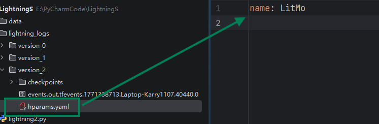
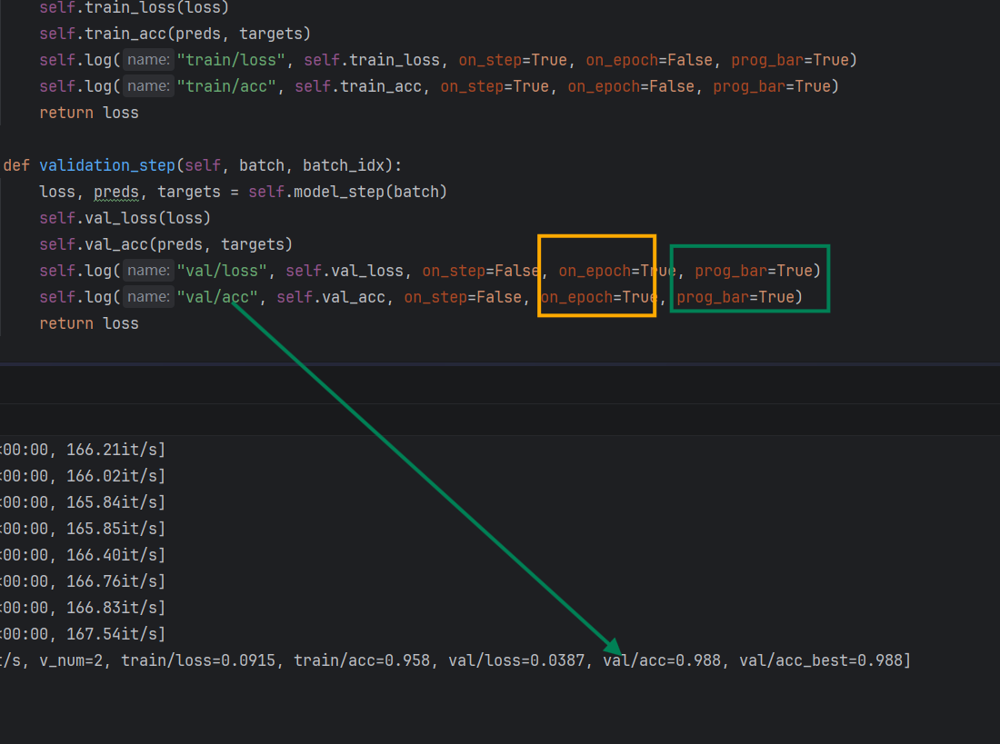

# PyTorch Lightning
【PL】：https://lightning.ai/
# 什么是 PyTorch Lightning
PyTorch Lightning 是建立在 PyTorch 之上的训练工程框架，Lightning 的理念是，你只写算法逻辑，工程交给我。一个最简单的训练范式应该是，写模型、定义数据集、封装 DataLoader、定义损失函数、定义优化器、写训练循环、验证循环。
我们来看一下最简单的，训练验证。首先有模型：
import torch | |
from torch import nn | |
class Net(nn.Module): | |
def __init__(self, *args, **kwargs) -> None: | |
super().__init__(*args, **kwargs) | |
self.model = nn.Sequential( | |
nn.Conv2d(in_channels=1, out_channels=16, kernel_size=5, stride=1, padding=2), | |
nn.ReLU(), | |
nn.MaxPool2d(kernel_size=2, ceil_mode=False), | |
nn.Conv2d(in_channels=16, out_channels=32, kernel_size=5, stride=1, padding=2), | |
nn.ReLU(), | |
nn.MaxPool2d(kernel_size=2, ceil_mode=False), | |
nn.Flatten(), | |
nn.Linear(32 * 7 * 7, 500), | |
nn.ReLU(), | |
nn.Linear(500, 100), | |
nn.Linear(100, 10) | |
) | |
def forward(self, x): | |
x = self.model(x) | |
return x |
训练脚本：
import torch | |
import torch.nn as nn | |
import torchvision.datasets | |
from torch.utils.data import DataLoader | |
from torchvision import transforms | |
from model import Net | |
transform = transforms.Compose([ | |
transforms.ToTensor(), | |
transforms.Normalize((0.1307,), (0.3081,)) | |
]) | |
device = torch.device("cuda" if torch.cuda.is_available() else "cpu") | |
datasets_mnist_train = torchvision.datasets.MNIST("data", train=True, transform=transform, | |
download=True) | |
datasets_mnist_test = torchvision.datasets.MNIST("data", train=False, transform=transform, | |
download=True) | |
dataLoader_train = DataLoader(datasets_mnist_train, batch_size=64, shuffle=True, num_workers=0) | |
dataLoader_test = DataLoader(datasets_mnist_test, batch_size=64, shuffle=False, num_workers=0) | |
# 获取数据集大小 | |
train_data_size = len(datasets_mnist_train) | |
test_data_size = len(datasets_mnist_test) | |
print(f"训练数据集的长度为{train_data_size}") | |
print(f"测试数据集的长度为{test_data_size}") | |
net = Net().to(device) | |
# 创建损失函数 | |
loss_fn = nn.CrossEntropyLoss() | |
# 交给 GPU | |
loss_fn = loss_fn.to(device) | |
# 创建优化器 | |
optimizer = torch.optim.SGD(net.parameters(), lr=0.01, momentum=0.5) | |
# 设置训练网络一些参数 | |
# 训练的轮数 | |
total_train_step = 0 | |
# 测试的轮数 | |
total_test_step = 0 | |
# 训练的轮数 | |
epoch = 15 | |
for i in range(epoch): | |
print("--------第 {} 轮训练开始--------".format(i + 1)) | |
net.train() | |
for data in dataLoader_train: | |
imgs, targets = data | |
imgs = imgs.to(device) | |
targets = targets.to(device) | |
outputs = net(imgs) | |
loss = loss_fn(outputs, targets) | |
optimizer.zero_grad() | |
loss.backward() | |
optimizer.step() | |
total_train_step += 1 | |
if total_train_step % 100 == 0: | |
print(f"训练次数：{total_train_step}，loss：{loss}") | |
print("step:", total_train_step, "loss:", loss.item()) | |
net.eval() | |
total_test_loss = 0 | |
total_test_accuracy = 0 | |
with torch.no_grad(): | |
for data in dataLoader_test: | |
imgs, targets = data | |
imgs = imgs.to(device) | |
targets = targets.to(device) | |
outputs = net(imgs) | |
loss = loss_fn(outputs, targets) | |
total_test_loss += loss.item() | |
accuracy = (outputs.argmax(1) == targets).sum() | |
total_test_accuracy += accuracy.item() | |
print("整体测试集上的Loss：{}".format(total_test_loss)) | |
print("整体测试集上的正确率：{}".format(total_test_accuracy / test_data_size)) | |
total_test_step += 1 | |
torch.save(net, "net_DI.pth") | |
print("模型已保存") |
像这种简单点的模型训练几步就完成了，但是如果我的组件再多一点，加自定义损失，加绘图呢？甚至说我们在里面写整理 batch，新建算法单元，这都是问题，代码只会越来越臃肿，变得不可维护，PyTorch Lightning 应运而生。
# 从 PyTorch 迁移到 PyTorch Lightning
from lightning.pytorch.callbacks import TQDMProgressBar | |
from lightning.pytorch.utilities.types import TRAIN_DATALOADERS | |
from torch.utils.data import DataLoader | |
from torch import optim, nn, utils, Tensor | |
from torchvision.datasets import MNIST | |
from torchvision import transforms | |
import lightning as L | |
from model import Net | |
class LitMo(L.LightningModule): | |
def __init__(self): | |
super().__init__() | |
self.model = Net() | |
self.loss_fn = nn.CrossEntropyLoss() | |
transform = transforms.Compose([ | |
transforms.ToTensor(), | |
transforms.Normalize((0.1307,), (0.3081,)) | |
]) | |
self.datasets_mnist_train = MNIST("data", train=True, transform=transform, | |
download=True) | |
def forward(self, x): | |
return self.model(x) | |
def training_step(self, batch, batch_idx): | |
x, y = batch | |
pred = self.forward(x) | |
loss = self.loss_fn(pred, y) | |
self.log( | |
"train_loss", | |
loss, | |
on_step=True, | |
on_epoch=False, | |
prog_bar=True, | |
logger=True | |
) | |
return loss | |
def train_dataloader(self) -> TRAIN_DATALOADERS: | |
return DataLoader(self.datasets_mnist_train, | |
batch_size=64, | |
shuffle=True, | |
num_workers=2, | |
persistent_workers=True, | |
pin_memory=True) | |
def configure_optimizers(self): | |
optimizer = optim.Adam(self.parameters(), lr=1e-3) | |
return optimizer | |
if __name__ == '__main__': | |
model = LitMo() | |
trainer = L.Trainer(max_epochs=20, accelerator="gpu", devices=1, logger=True, | |
enable_progress_bar=True, | |
callbacks=[TQDMProgressBar()], | |
log_every_n_steps=10) | |
trainer.fit(model) |
这段代码给我的第一感觉就是模块化，没有训练循环，代码可维护性显著提升，他还有一些其他功能，扩展成本极低。当然以上代码仍然耦合度较高，下面请各位跟着我一步步做解耦。
# 将数据部分从 LM 中分离
import lightning as L | |
import torch | |
from lightning.pytorch.utilities.types import TRAIN_DATALOADERS | |
from torch.utils.data import random_split, DataLoader | |
from torchvision import transforms | |
from torchvision.datasets import MNIST | |
class MyDDataModule(L.LightningDataModule): | |
def __init__(self, data_dir): | |
super().__init__() | |
self.data_test = None | |
self.data_val = None | |
self.data_train = None | |
self.data_dir = data_dir | |
def prepare_data(self) -> None: | |
pass | |
def setup(self, stage: str) -> None: | |
dataset = MNIST(self.data_dir, train=True, download=True, transform=transforms.ToTensor()) | |
self.data_train, self.data_val, self.data_test = ( | |
random_split(dataset=dataset, lengths=[55000, 5000], | |
generator=torch.Generator().manual_seed(42))) | |
def train_dataloader(self) -> TRAIN_DATALOADERS: | |
return DataLoader(self.data_train, batch_size=64, shuffle=True, num_workers=2) | |
def val_dataloader(self) -> TRAIN_DATALOADERS: | |
return DataLoader(self.data_val, batch_size=64, shuffle=False, num_workers=2) | |
def test_dataloader(self) -> TRAIN_DATALOADERS: | |
return DataLoader(self.data_test, batch_size=64, shuffle=False, num_workers=2) |
# 先介绍几个实用工具
他们都是已经写好的方法了，我们不用再造轮子了
# Accuracy
self.train_acc = Accuracy(task="multiclass", num_classes=10) |
Accuracy = 预测正确的样本数 / 总样本数
# MeanMetric
MeanMetric 是自动帮你统计平均值的对象
self.train_loss = MeanMetric() |
TorchMetrics 在分布式场景下会自动做 all_reduce，同步各卡统计值。
# MaxMetric
和上面那个原理是一样的，这个是聚焦于最大值。
self.val_acc_best = MaxMetric() |
# LightningModule 的生命周期
- on_fit_start，整个 fit 只执行一次。
- on_train_start，初始化记录器，reset metric。
- on_train_epoch_start
- on_train_batch_start
- training_step
- on_before_backward
- backward
- on_after_backward
- optimizer_step
- on_train_batch_end
- on_validation_epoch_start
- validation_step
- on_validation_epoch_end
- on_train_end
- on_fit_end
__init__() | |
on_fit_start() | |
on_train_start() | |
for epoch in epochs: | |
on_train_epoch_start() | |
for batch: | |
on_train_batch_start() | |
training_step() | |
backward() | |
optimizer_step() | |
on_train_batch_end() | |
on_train_epoch_end() | |
# 验证阶段 | |
on_validation_epoch_start() | |
validation_step() | |
on_validation_epoch_end() | |
on_train_end() | |
on_fit_end() |
# LightningDataModule 的生命周期
- prepare_data
- setup
- train_dataloader
- val_dataloader
fit 结束
- setup
- test_dataloader
test 结束
# 多卡训练
Trainer 默认会在所有可用 GPU 上运行
# 运行在默认可用的多块显卡上 | |
trainer = Trainer(accelerator="auto", devices="auto", strategy="auto") | |
# 等价于 | |
trainer = Trainer() | |
# 运行在一块显卡上 | |
trainer = Trainer(accelerator="gpu", devices=1) | |
# 运行于多个 GPU | |
trainer = Trainer(accelerator="gpu", devices=8) | |
# 自动选择设备数量 | |
trainer = Trainer(accelerator="gpu", devices="auto") |
详情请参考：https://lightning.ai/docs/pytorch/stable/accelerators/gpu_basic.html#choosing-gpu-devices
# Trainer 关键配置
- max_epochs 最大循环次数
- max_steps 最大前向传播次数，这个的优先级比 max_epochs 高
- check_val_every_n_epoch 不配置默认每 1epoch 进行一次 val
- val_check_interval 这个是多少批次后进行一次 val
- gradient_clip_val 梯度裁剪
# 日志框架
我认为 PL 对日志的封装是非常强大，非常方便的。
# 训练过程日志
还记得之前的 log 块吗，Lightning 已经帮我们自动装配好了 TensorBorad！

# 超参数日志
在 LM 的初始化方法下加入：
self.save_hyperparameters() |
它会把这里的参数记录下来：
# Log 中的 on_step 与 on_epoch
一般来说在 Validation 中设置 on_step=False, on_epoch=True ，在 training_step 中设置 on_step=True, on_epoch=True ，这样设置的话，在日志中可以看到两种训练曲线一个是每步的训练曲线，比较详细，另一个是每一个大循环的曲线，也就是 epoch 的，它比较平均。
# 安装了 TensorBoard 又想使用 csvLog
通常来说 TensorBoard 的只是在我们训练中进行日志查看，如果想绘制更精美的曲线图片的话，通常我会使用 matplotlib 或者是 matlab 进行绘制，但是你安装了 TB 之后还是 csvlog 会默认禁用，当然也从 TB 可以下载数据。可以通过如下方式进行再次开启：
csv_logger = CSVLogger("lightning_logs", name="csv") | |
tb_logger = TensorBoardLogger("lightning_logs", name="tb") | |
trainer = L.Trainer(max_epochs=2, accelerator="gpu", devices=1, logger=[csv_logger, tb_logger], | |
enable_progress_bar=True, | |
callbacks=[TQDMProgressBar(), LearningRateMonitor(logging_interval="epoch")], | |
log_every_n_steps=10) |

# checkpoint
# 断点续测
model = LitMo.load_from_checkpoint("ckpt路径") | |
trainer.test(model, datamodule=datamodule) |
# 断点续训
trainer.fit(model, datamodule=datamodule,ckpt_path="ckpt路径") |
# 最佳权重与最新权重共存
checkpoint_callback = ModelCheckpoint( | |
monitor="val/loss", | |
mode="min", | |
save_top_k=1, | |
save_last=True, | |
filename="best-{epoch:02d}" | |
) | |
trainer = L.Trainer(max_epochs=10, accelerator="gpu", devices=1, logger=[csv_logger, tb_logger], | |
enable_progress_bar=True, | |
callbacks=[TQDMProgressBar(), LearningRateMonitor(logging_interval="epoch"), | |
checkpoint_callback], | |
log_every_n_steps=10) |
# lightning-hydra-template
【开源地址】：https://github.com/ashleve/lightning-hydra-template
lightning-hydra-template 帮你解决：Hydra 超参数管理、Lightning 训练逻辑分离、TensorBoard 日志管理、自动保存 best.ckpt、多实验管理用你自己从 0 设计项目结构。
# configs
这是 Hydra 的配置根目录，所有 .yaml 都可以通过命令行覆盖。
# trainer
configs/trainer/ | |
├── default.yaml | |
├── cpu.yaml | |
├── gpu.yaml | |
├── ddp.yaml | |
├── ddp_sim.yaml | |
├── mps.yaml |
控制 Lightning Trainer 的行为。训练轮次、最小训练 epochs、最大训练 epochs 等，这些都在 default 之中：
_target_: lightning.pytorch.trainer.Trainer | |
default_root_dir: ${paths.output_dir} | |
min_epochs: 1 # prevents early stopping | |
max_epochs: 10 | |
accelerator: cpu | |
devices: 1 | |
# mixed precision for extra speed-up | |
# precision: 16 | |
# perform a validation loop every N training epochs | |
check_val_every_n_epoch: 1 | |
# set True to to ensure deterministic results | |
# makes training slower but gives more reproducibility than just setting seeds | |
deterministic: False |
# model
定义模型结构 + 模型超参数：
_target_: src.models.mnist_module.MNISTLitModule | |
optimizer: | |
_target_: torch.optim.Adam | |
_partial_: true | |
lr: 0.001 | |
weight_decay: 0.0 | |
#scheduler: | |
# _target_: torch.optim.lr_scheduler.ReduceLROnPlateau | |
# _partial_: true | |
# mode: min | |
# factor: 0.1 | |
# patience: 10 | |
scheduler: | |
_target_: torch.optim.lr_scheduler.CosineAnnealingLR | |
_partial_: true | |
T_max: ${trainer.max_epochs} | |
eta_min: 0.00001 | |
net: | |
_target_: src.models.components.simple_dense_net.SimpleDenseNet | |
input_size: 784 | |
lin1_size: 64 | |
lin2_size: 128 | |
lin3_size: 64 | |
output_size: 10 | |
# compile model for faster training with pytorch 2.0 | |
compile: false |
# data
数据相关内容：
_target_: src.data.mnist_datamodule.MNISTDataModule | |
data_dir: ${paths.data_dir} | |
batch_size: 128 # Needs to be divisible by the number of devices (e.g., if in a distributed setup) | |
train_val_test_split: [55_000, 5_000, 10_000] | |
num_workers: 2 | |
pin_memory: True | |
persistent_workers: True |
# callbacks
训练控制逻辑 ModelCheckpoint、EarlyStopping、LearningRateMonitor、RichProgressBar 等，不用在代码里 new callback。
# logger
控制用什么日志后端：
- TensorBoard
- WandB
- CSVLogger
# experiment
消融实验的核心目录：
python src/train.py experiment=mnist_baseline |
# hparams_search
和 Optuna 联动的超参数搜索，自动跑多组实验。
# debug
快速调试用配置：只跑 1 个 batch、只跑 1 个 epoch、打印更多日志。
# extras
辅助功能开关，比如：是否打印模型结构、是否启用异常追踪、是否保存代码快照。
# hydra
控制 Hydra 本身的行为：日志目录结构、输出路径格式。
# paths
路径统一管理，数据路径、日志路径、checkpoint 路径。
# local
本机私有配置
# train.yaml / eval.yaml
Hydra 的主配置文件
- train.yaml：训练入口
- eval.yaml：测试 / 推理入口
# 一个完整调用是怎么发生的
执行：
python src/train.py trainer=gpu model=mnist data=mnist |
- 读取
train.yaml - 合并 trainer /model/data
- 实例化 Lightning Trainer
- 实例化 Model / DataModule
- 开始训练
lightning-hydra-template = 用配置驱动一切
- trainer/ 怎么训
- model/ 用什么模型
- data/ 数据怎么来
- callbacks/ 训练怎么停 / 怎么存
- logger/ 日志怎么记
- experiment/ 实验怎么复现
# Hydra 的跨 yaml 读取
通过 ${trainer.max_epochs} 跨文件读取 trainer.yaml 里的值
scheduler: | |
_target_: torch.optim.lr_scheduler.CosineAnnealingLR | |
_partial_: true | |
T_max: ${trainer.max_epochs} | |
eta_min: 0.00001 |
当 Hydra 运行时，它会将所有分散的 YAML 文件组合成一个巨大的 Config 树：
-
trainer.yaml里的内容会被放在config.trainer下。 -
model.yaml里的内容会被放在config.model下。 - 使用
${trainer.max_epochs}就像是在说：“去trainer那个分支里帮我把max_epochs的数字拿过来。”